论文入口：arXiv:2605.26086。标题为 Claw-Anything: Benchmarking Always-On Personal Assistants with Broader Access to User's Digital World。作者包括 Yusong Lin、Xinyuan Liang、Haiyang Wang、Qipeng Gu、Siqi Cheng、Jiangui Chen、Shuzhe Wu、Feiyang Pan、Lue Fan、Sanyuan Zhao、Dandan Tu；论文列出的机构为 Beijing Institute of Technology、Huawei Technologies、Peking University、Institute of Automation, Chinese Academy of Sciences。一作口径上可以理解为北理工与华为合作背景，本文目录沿当日调研命名保留“多校-ClawAnything”。主类别是 LLM / Agent。PDF 首页列出 Code: github.com/LiberCoders/Claw-Anything，Dataset: LiberCoders/Claw-Anything；本轮笔记只基于论文 PDF 精读，没有对仓库源码或数据集内容做独立审计。
这篇论文不是提出一个新的 agent 模型架构，而是构造一个更接近“常驻个人助理”的 benchmark 和数据生成管线。它的核心判断是：如果个人助理要长期驻留在用户数字世界里，评测就不能只给它一个干净的单次任务、一个 CLI、一个服务或一小段静态上下文，而要让它面对多月事件流、多个互相依赖的后端服务、桌面和移动端混合界面，以及需要主动发现时机的任务。论文的贡献因此分成两层：第一层是 Claw-Anything 这个 200 条人工核验评测任务的基准；第二层是自动生成 2,000 个训练环境并收集成功轨迹的数据基础设施。
1. 背景和问题
Claw-Anything 关心的是“agent 的可见范围和可行动范围是否足够接近真实用户数字世界”。近两年很多数字 agent benchmark 已经让模型调用工具、操作文件、访问网页或执行终端命令，但大多数任务仍然是局部的：用户提出一个明确请求，环境给出有限状态，agent 只需要在一个服务或一个接口内完成操作。这样的任务能测试工具调用和短程规划，却很难测试常驻个人助理真正需要的能力。真实用户的意图往往散落在邮件、日历、聊天、文档、购物、出行、银行、移动端通知、历史搜索和临时笔记之间；一个“昨天我看的相机降价了吗”看似简单，背后可能要读取昨天的浏览或搜索事件、识别具体商品、查询当前价格、判断是否低于提醒阈值，再把结果反馈给用户。这个例子说明，个人助理的难点不是单个 API 调用，而是跨时间、跨服务、跨设备的状态整合。
Figure 1 把论文的问题压缩成两半。左侧展示的是用户数字世界：Apps & Services、Devices、Event Streams 都围绕同一个 user 展开，agent 支持从“Context-aware Reasoning”延伸到“Full-stack Actionability”和“Proactive Assistance”。这说明作者不是单纯扩大 prompt 长度，而是把可观察状态和可执行动作都纳入 benchmark 的操作范围。右侧是一个 pass@1 对比图，纵轴是 Claw-Anything 上的成功率，横轴标注模型规模但论文也说明黄色闭源区域不对应真实模型大小。关键结论是，即使 GPT-5.5 也只有 34.5% pass@1，训练后的 Claw-Anything-Qwen3.5-27B 能接近闭源强模型，但绝对成功率仍然不高。这张图的价值不在于证明某个模型“赢了”，而在于提醒读者：当评测从单点任务扩展到广域数字世界后，模型规模、闭源能力和普通 agent scaffold 都不足以保证可靠完成任务。
论文把已有 benchmark 的缺口归结为三个 context-scaling dimensions。第一是 long-horizon event streams，即超过三个月的系统级和服务级活动日志。没有事件流时，agent 只能看静态数据库或当前界面，很难回答“之前发生过什么”“某个提醒是否已经被触发”“当前任务和历史冲突之间如何取舍”。第二是 interdependent backend services。个人助理任务经常要求从一个服务取证据，再到另一个服务执行动作，例如从 Slack 和日历确认会议，再在文档或邮件中生成总结。第三是 integrated GUI and CLI interaction across multiple devices。现实任务不只在命令行完成，移动端 app、通知、GUI 状态也会承载关键证据。Claw-Anything 把这三类上下文同时放进评测，目的是让 agent 必须在更宽的 operational scope 里完成闭环。
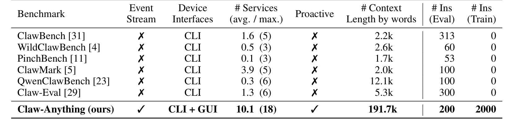
Table 1 是背景章最重要的证据。ClawBench、WildClawBench、PinchBench、ClawMark、QwenClawBench、Claw-Eval 都没有事件流，也都只覆盖 CLI；Claw-Anything 是表中唯一同时标记 Event Stream、CLI+GUI 和 Proactive 的基准。服务数量差异也非常大：Claw-Eval 平均每个任务涉及 1.3 个服务，最多 6 个；Claw-Anything 平均 10.1 个，最多 18 个。上下文长度从 Claw-Eval 的 5.3k words 扩到 191.7k words。评测实例数是 200，训练实例是 2000。这个表说明论文的挑战不是“又做了一批 200 条任务”，而是把任务放进了一个显著更长、更吵、更互相依赖的环境。对于 agent 研究来说，这种差异会改变失败类型：模型可能已经找到了线索，却因为工具选择、状态同步、设备切换或执行动作失败而不能通过 verifier。
这篇论文和推荐系统也有间接关系。它没有做推荐排序模型，但 proactive assistance 本质上要求 agent 根据用户长期上下文判断“现在是否该主动提供建议”。这和推荐系统里的用户建模、长期兴趣、场景触发、时机选择、负反馈和权限边界相似。不同之处是，Claw-Anything 的输出不是推荐列表，而是一个能在数字环境中执行动作的个人助理行为。对推荐或搜索团队来说，这篇论文的启发是：当系统从“响应明确 query”走向“基于长期上下文主动辅助”时，评测必须同时记录历史事件、当前 fixture、可用工具、用户授权和最终执行结果，否则单一点击率或单轮成功率不足以解释系统是否可靠。
论文还强调 benchmark 可以作为数据基础设施。传统评测只告诉我们模型差在哪里，但 Claw-Anything 的生成管线还能产生训练环境和成功轨迹。作者用 2,000 个训练环境收集 1,500 条成功轨迹，对 Qwen3.5-27B 做后训练，使 pass@1 从 9.8 提升到 33.5。这个结果把“评测”转成“评测和训练闭环”：如果环境生成足够稳定，benchmark 就不只是排名榜，而是可以不断扩展难例、采样成功轨迹、训练更适配的 agent。这里的风险也很明显：若生成环境和评测环境来自同一套模拟假设，模型可能学到的是模拟器风格而不是真实世界泛化。因此阅读本文时要同时看两件事：一是它是否真的扩大了 agent 的操作范围；二是它的自动生成管线是否引入了足够真实的噪声、冲突和验证机制。
2. 方法
2.1 Task Formulation：把个人助理任务放进广域数字环境
论文的方法从 task formulation 开始，而不是从模型结构开始。Claw-Anything 的每个任务都嵌入在一个 coherent persona 和一个跨时间、服务、设备的数字环境中。作者把环境形式化为：
符号解释：$E$ 是一个任务所在的数字环境；$P$ 是用户 persona，包括用户画像、偏好、角色和行为倾向；$D$ 是设备集合，包含 CLI-based computers 和 GUI-based mobile phones 等异构交互界面；$F$ 是 fixture bank，表示超过四十个后端服务中的持久状态，覆盖生活、工作和相关领域；$L$ 是 long-horizon activity stream，包含超过三个月的系统级和服务级日志。这个公式的意义是把“用户数字世界”拆成四类可构造、可回放、可消融的对象。没有 $P$，任务就缺少个性化偏好；没有 $D$，多设备协同无法测试；没有 $F$，跨服务状态只是口头设定；没有 $L$，长期事件和噪声就无法进入推理链。
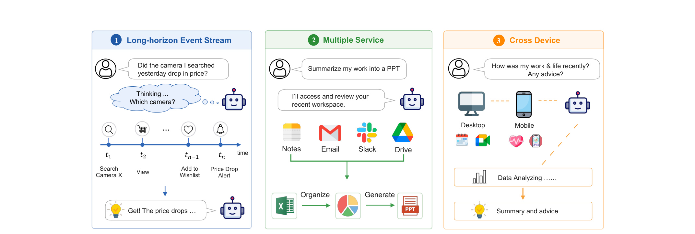
Figure 2 是方法章的入口图。左侧的 long-horizon event stream 用相机搜索、查看、加入愿望单和降价提醒表示“过去事件如何决定当前问题的指向”。中间的 multiple service 展示从 Notes、Email、Slack、Drive 等后端服务组织信息并生成工作总结。右侧的 cross device 展示桌面和移动端共同承载用户状态，agent 需要把工作和生活信息合并成建议。图中三个子任务都不是靠单次文本理解就能完成，因为它们要求 agent 先定位相关历史，再访问对应服务，最后执行或生成合适输出。把这张图放在方法章，是因为它定义了后续所有数据生成、评测和消融的坐标轴。
在这个 formulation 下，query 既可以是 reactive，也可以是 proactive。Reactive query 是用户明确提出请求，agent 根据环境完成任务；proactive query 则更接近 OpenClaw 的 heartbeat-style 机制，agent 周期性监控数字环境，在没有直接提示时给出上下文相关建议。主动辅助之所以难，是因为模型不仅要知道“怎么做”，还要知道“现在是否应该做”和“用户是否真的需要”。这会引入两个额外判断：一个是时机判断，另一个是打扰边界。论文没有把它们变成独立模型，而是放入 benchmark 任务与 verifier 中，让成功率反映 agent 在广域状态下完成主动辅助的能力。
更细地看，reactive 与 proactive 的差别还会改变正负样本边界。Reactive 场景里，用户 query 本身就是任务触发器；只要 query 给出，agent 可以把所有资源用于求解。Proactive 场景里，触发器来自环境变化，agent 必须先判断“这条状态是否足以构成一个该被提醒或建议的事件”。例如用户日历、航班、预算、家人消息和项目 deadline 同时变化时，真正要做的不是把所有变化都总结出来，而是判断哪一项需要及时行动。这个判断没有单一关键词，必须结合 persona 的偏好、历史活动、当前 fixture 和事件发生时间。Claw-Anything 把 proactive 作为 distinct capability，是因为它把任务从“用户已经知道自己要什么”推进到“系统要从长期数字世界里发现用户可能需要什么”。这正是 always-on assistant 与普通工具调用 agent 的分界。
从数据结构角度看，$P,D,F,L$ 四个变量之间也不是平行输入。$P$ 提供偏好和约束，例如职业、家庭安排、宗教习惯、工作节奏或出行偏好；$F$ 保存服务当前状态，例如邮箱、日历、待办、文档、金融记录或移动端 app 数据；$L$ 保存历史事件和操作痕迹，承担时间线和证据来源的角色；$D$ 决定 agent 可以通过什么交互面访问或修改这些状态。一个任务是否可解，通常取决于四者之间的连接。例如 $L$ 里记录用户曾搜索相机，$F$ 里保存愿望单和价格状态，$P$ 里可能说明用户预算谨慎，$D$ 里决定 agent 能否在移动端 app 查看提醒或在 CLI 后端读取日志。若只给其中一部分，任务可能仍然有表面答案，但无法形成可执行闭环。
2.2 Context-rich Digital Environment：persona、fixture、event log 和设备的连接方式
Claw-Anything 的环境左侧结构在 Figure 3 中给出。它不是一个简单的 JSON 状态，而是由 Docker-linux、Docker-android、mock CLI services、real GUI services、CLI tools、GUI tools、service states、service logs 和 app states 共同构成。论文把 CLI 和 GUI 放在同一个任务环境里，目的是让 agent 同时面对可编程接口和真实移动端状态。对工程复现来说，这一点很关键：只提供 API 通常会降低任务难度，因为 API 隐式规整了状态；而 GUI 或移动端状态可能需要视觉定位、界面切换和更脆弱的动作执行。
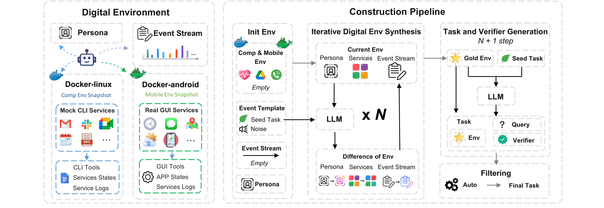
Figure 3 左半边说明环境由 persona、event stream、computer environment、mobile environment 和服务状态组成。persona 不是一段静态背景，而会在事件注入过程中被逐步丰富。event stream 不只是任务相关线索，也包含干扰和冲突。右半边说明构造流水线：从 Init Env 出发，经过 Iterative Digital Env Synthesis 多轮更新当前环境，再在 N+1 step 生成 task、query、verifier，最后过滤为 final task。读这张图要注意“Difference of Env”这个中间对象，它表示一次事件注入不仅改写自然语言描述，也会同步更新 persona、services 和 event stream。也就是说，Claw-Anything 想做的是状态一致的数字世界模拟，而不是只让 LLM 编几个任务描述。
论文特意加入 irrelevant events、services 和 state，以逼近真实个人数字世界。真实用户日志里绝大多数事件都和当前任务无关，甚至会出现矛盾信号、过期信息、取消记录和被删除草稿。若 benchmark 只保留干净证据，agent 可以通过关键词匹配或最近事件捷径完成任务；一旦引入多月噪声，模型就必须先做 investigation，再判断证据优先级，最后执行动作。这里的方法设计和信息检索里的噪声鲁棒性相似，但更复杂，因为 agent 的错误可能发生在检索证据、调用工具、跨服务写入或最后 verifier 判断的任一环节。
这里还要区分 fixture state 和 event log 的作用。Fixture 更像“当前数据库快照”，保存某个服务此刻认为真实的状态；event log 更像“操作历史和环境叙事”，保存状态如何一步步形成。只看 fixture，agent 可能知道现在日历里有一个会议，却不知道这个会议是否因上一封邮件被更新、是否和另一个服务里的任务冲突、是否是噪声事件留下的残余。只看 event log，agent 又可能知道用户曾经执行过某个动作，却不知道当前服务状态是否仍然有效。因此 Claw-Anything 要求 agent 同时读静态 fixture 和动态 log。这个设计对长期记忆系统特别重要，因为很多真实任务都需要用历史解释当前，用当前校正历史。
设备维度也不只是“增加 GUI 图片”。论文环境里 CLI-based Linux Docker environment 适合脚本、文件和 mock services；GUI-based Android Docker environment 则承载真实移动 app 状态和界面操作。二者之间有天然不对称：CLI 工具通常结构化、可复制、错误容易日志化；GUI 操作更接近真实用户设备，但会带来定位、等待、状态变化和回退问题。Claw-Anything 将二者合并，是为了测试 agent 是否能把桌面后端证据转化为移动端行动，或把移动端状态反馈到服务层。许多 benchmark 只给 CLI，会高估模型在真实个人助理场景中的可靠性。
2.3 Queries across time, services, and devices：从自然请求到可执行任务
论文中的 query 被写成自然、甚至有些 underspecified 的语言。这样的设计是为了模拟真实用户不会把所有约束都写清楚。用户可能说“帮我安排一下最近的出差”“把这周项目情况整理给团队”“最近工作和生活状态怎么样，有什么建议”，而不是列出需要读哪些表、哪个服务有答案、哪条日志可信。agent 的任务是从事件流里识别相关信号，再跨服务和设备完成动作。这个过程可以抽象为：
符号解释：$q$ 是用户 query；$E=(P,D,F,L)$ 是任务环境；$\mathrm{SelectRelevant}$ 表示从 persona、设备、fixture 和日志中筛选任务相关证据；$\mathrm{Act}$ 表示根据筛选结果执行工具调用、GUI 操作或生成回答。这个公式不是论文原文的训练目标，而是对任务链路的结构化说明。它强调 successful assistance 需要两个阶段都正确：证据选择正确但执行失败，或者执行动作熟练但证据选错，都会导致失败。后面的 failure mode analysis 也正好显示，investigation 和 execution 之间的断裂是主要问题。
跨时间任务的难点是事件顺序和新旧信息。比如某个商品可能先被浏览、后加入愿望单、再出现价格变化；如果 agent 只看静态商品表，无法知道用户指的“昨天看过的相机”是哪一个。跨服务任务的难点是状态分布和依赖方向。邮件里可能有会议背景，日历里有时间约束，Slack 里有最新变更，Drive 里有文档模板；任何一个服务缺失都会让任务不可完成。跨设备任务的难点是接口异构。CLI 环境适合读文件和调用服务，GUI 移动端适合处理 app 状态和通知。Claw-Anything 把三类难点合在一起，使 benchmark 更像一个真实常驻助理的工作台。
2.4 Outcome-oriented Evaluation：多路径任务不能只看过程轨迹
Claw-Anything 的 evaluation 继承并修改 Claw-Eval 的 rubric-based framework，结合 rule-based checks 和 LLM judgments，输出 soft score 和 binary pass/fail label。论文强调许多任务存在 multiple valid solution paths，因此不应把评分过度绑定在一条标准过程轨迹上。个人助理任务常见情况是：一个 agent 可能通过日历先定位会议，另一个 agent 通过邮件线程先定位项目，但只要最终结果满足用户目标，就应该被判定为成功。
论文的评分思想可以写成：
符号解释：$\tau$ 是 agent 执行轨迹；$s_{\mathrm{outcome}}$ 是最终结果是否满足 verifier 或 judge 的分数；$s_{\mathrm{process}}$ 是过程行为的辅助评分；$\lambda_{\mathrm{out}}$ 和 $\lambda_{\mathrm{proc}}$ 是权重。论文没有给出这个精确线性公式，但明确说明最终 outcome 权重更高，正确 outcome 本身应足以超过 pass threshold，错误 outcome 则低于阈值。这样设计可以避免 agent 通过合理替代路径完成任务却因为没有复现参考轨迹而被扣到失败。
这个评价设计也有代价。Outcome-dominated scoring 能减少过程路径偏置，但如果 verifier 或 LLM judge 对 outcome 的定义不够严格，错误动作可能被误判为可接受。论文因此在任务生成中同时生成 verifier 和 reference solution，并在后续过滤、执行验证和人工核验中检查一致性。换句话说，Claw-Anything 的可靠性不只来自模型评测阶段，也来自任务构造阶段对 query、environment、verifier 三者关系的控制。
在实现时，outcome-oriented evaluation 还要求把“任务完成”定义为环境中的可检查结果，而不是自然语言解释看起来合理。比如用户要求安排、更新、发送、整理或推荐，最终 verifier 应该能够检查对应服务状态、输出文件、消息内容或建议条件是否满足。若只让 judge 阅读 agent 的解释，模型很容易通过漂亮的计划描述获得过程分；但 Claw-Anything 的设计希望最终 outcome 具有决定性。这也是 Pass^3 有意义的原因：常驻助理不能偶尔成功，必须在独立运行中稳定找到证据并完成动作。对于多路径任务，过程分仍然有用，可以解释失败程度和行为质量，但不应该覆盖最终结果。
2.5 Construction Pipeline：从 persona seed 到任务集合的自动闭环
手工构造这种环境非常贵，因为每个任务都要有 persona、服务状态、长期日志、设备接口、用户 query、参考答案和 verifier。论文的关键方法是一个自动数据生成管线，用 LLM 作为 simulator 逐轮扩展数字世界，并在指定轮次抽取任务。Algorithm 1 是这个闭环的可执行骨架。
Algorithm 1 的输入包括 seed persona $P_0$、task-seed pool $S$、noise-event pool $N$、rollout horizon $R$ 和 snapshot rounds $I_{\mathrm{task}}$。初始化时 fixture state $F$、event log $L$ 和 task set $T$ 为空，persona state $P$ 等于 $P_0$。每一轮先从 $S$ 和 $N$ 中按 noise_ratio 采样一个事件 $e$，再把它适配到当前环境：
符号解释：$e$ 是抽象事件或任务模板，可能来自 seed task，也可能来自 noise event；$\tilde{e}$ 是结合当前 persona、fixture 和日志后实例化的事件。这个步骤很重要，因为同一个抽象事件放到不同 persona 上会产生不同前因、后果和服务更新。例如“航班变更”“预算限制”“会议冲突”在不同用户职业、时区和服务状态下会变成不同任务。
接着 LLM 生成环境更新：
并更新世界状态：
符号解释：$\Delta F$ 是服务持久状态变化，例如新增邮件、日历项、文档、交易记录或 app 数据；$\Delta L$ 是事件日志变化，记录系统级或服务级活动；$\Delta P$ 是 persona 描述和行为记录的变化。这里的 union 不是简单集合并，而是表示把新事件写入对应状态。这个更新式体现了论文最核心的构造理念：每次事件都要同时影响 fixture、log 和 persona，长期滚动后才会形成带噪声、带冲突、带个性化偏好的数字世界。
当轮次 $r$ 属于 $I_{\mathrm{task}}$ 时，管线抽取当前快照：
然后生成 query、verifier 和 reference answer：
最后过滤任务：
符号解释：$X_r$ 是某一轮的环境快照；$Q_r$ 是用户 query；$V_r$ 是 verifier；$A_{\mathrm{ref},r}$ 是参考答案；$\tau_r$ 是通过自动过滤后的任务实例。如果 $\tau_r\ne\varnothing$，就加入任务集合 $T$。这个流程将“生成环境”和“生成任务”解耦：前几轮可以只积累状态和噪声，指定轮次再从当前状态抽取可验证任务。这样能避免每个任务都是孤立生成，也能让同一个 persona 的历史成为后续任务的上下文。
从算法顺序看，Claw-Anything 的难点在于每轮都要保持因果连续性。第一步 Sample 只决定抽象事件类型，不能直接产生最终任务；第二步 AdaptToEnv 把事件落到当前 persona 和环境里，决定事件的具体对象、时间、服务和前后依赖；第三步 LLM 更新 $F,L,P$，决定世界状态是否真正变化；第四步更新环境，把变化写回持久状态；第五步只有在指定轮次才生成任务。这样的顺序可以防止任务和环境脱节。比如先生成 query 再补环境，容易出现 query 提到的证据在服务中不存在；而先滚动环境再从 snapshot 抽任务，则更容易保证 query 的答案确实埋在状态里。
Algorithm 1 里还有一个容易忽略的变量：noise_ratio。它控制采样来自 task-seed pool 还是 noise-event pool 的比例。noise_ratio 不是单纯为了“让文本变长”，而是为了控制相关信号在长期活动流中的稀疏程度。噪声过少时，agent 可以把所有事件都当作候选证据；噪声过多时，任务可能变得过难或 verifier 难以判断。因此后面的 Figure 7 将 noise ratio 作为消融变量，说明生成管线不仅能造环境，还能连续调节环境难度。
2.6 Stage I：Iterative Digital Environment Synthesis
Stage I 是 iterative digital environment synthesis。论文从一个 minimal persona seed 开始，由 LLM-based simulator 逐轮扩展用户数字世界。每一轮采样 task template 或 noise template，并根据当前 persona 和 world state 生成 fixture、event log 和 persona update。经过多轮后，原本稀疏的 persona 会变得更具体，服务状态也会积累跨组件依赖。这个阶段的输出不是单条任务，而是一个 temporally coherent environment。
这个阶段对真实性的贡献在于两类事件。Seed tasks 描述现实中常见的冲突模式，例如时间冲突、信息矛盾、财务限制等；noise events 则描述和目标任务无关的日常活动，例如浏览 inbox、草拟后删除邮件、记下后删除笔记、查看 RSS、检查库存 dashboard。这些噪声有的只留在 activity logs 里，有的会在 app database 中留下残余记录。它们并不直接构成目标任务，但会提高 investigation 难度。agent 需要区分“曾经发生但已取消”“看起来相似但不是当前目标”“和 persona 相关但与 query 无关”的线索。
从工程角度看，Stage I 最难复现的是一致性。一次事件可能同时改写邮件、日历、日志、persona 活动记录和移动端 app 状态。如果这些状态之间不一致，任务就可能不可解，或者 verifier 只能依赖生成器的上帝视角。论文用 iterative update 和后续 validation 来缓解这个问题，但依然依赖 LLM 生成质量。因此 Claw-Anything 的方法优势和风险都集中在这里：优势是可以大规模合成复杂世界；风险是合成世界的规律可能被模型学到，或者某些冲突只符合模拟器习惯。
Stage I 还承担 persona enrichment 的功能。Appendix A 说明，初始 persona 往往只是粗粒度描述，例如角色、行业、资历和一些行为特征；随着事件采样和注入，persona 会被写入更具体的偏好、活动记录和约束。这个过程让任务更加个性化：同样是“出行安排”，不同 persona 可能有不同预算、宗教习惯、家庭时间、工作优先级和沟通偏好。对个人助理来说，个性化不是在回答里加称呼，而是让 agent 在冲突中知道什么约束更重要。Claw-Anything 通过 persona 与 event stream 的共同演化，把这种偏好放进可评测环境。
Seed task 与 noise event 的区分也值得保留。Seed task 负责制造目标任务需要解决的结构性冲突，例如两个服务给出不同时间、预算不足、信息相互矛盾或用户偏好与当前安排冲突。Noise event 负责制造背景复杂度，它们可能留下删除草稿、取消待办、浏览记录或无关日志。一个好的 agent 不应该把所有噪声都过滤掉，因为有些噪声可能与 persona 更新有关；也不应该把所有历史都当成证据，因为多数活动与当前 query 无关。这个设计把长期上下文中的“选择性注意”变成了可观测能力。
2.7 Stage II：Task and Verifier Generation
Stage II 从指定环境快照中生成任务和 verifier。论文强调目标任务不是从孤立静态状态生成，而是从 evolving digital life 的下一步抽取。给定当前 persona 和环境，系统随机采样一个描述冲突的 seed task，把它适配成 persona-specific event，再由 LLM 生成 antecedents、用户需要解决的问题、verifier 和 reference solution。这里的 verifier 使用 god's-eye view，即可以看到任务生成时有意合成的 noise-free 信息。被评测的 agent 没有这种特权，只能在完整 noisy environment 中查找线索。
这种信息不对称是合理的。真实评测中，grader 需要知道答案才能判断是否完成；agent 则应该在噪声环境里自主调查。问题在于 verifier 必须和环境真实可达状态一致，否则会出现“grader 知道答案但 agent 无法通过环境推出答案”的失败。论文通过后续自动过滤和执行验证减少这类问题。对复现者来说，最应该检查的是 verifier 是否只依赖 agent 能访问的状态，reference solution 是否真的可以通过工具和 GUI 路径执行，以及 query 是否没有引入隐藏前提。
这里的 reference solution 不是为了要求 agent 完全照着走，而是为了证明任务至少有一条可行路径。由于评分强调 outcome，多条解法都可以通过；reference solution 的作用更像 solvability certificate。若 reference solution 无法在环境中执行，说明任务构造本身有问题；若 reference solution 能执行，但其他合理路径也能达到同一 outcome，评分也应允许。这个理念和软件工程 benchmark 中的测试用例类似：测试不是规定唯一修复方法，而是规定最终行为必须满足约束。
2.8 Stage III 与 Stage IV：过滤、人工核验和执行支持
Stage III 是 automatic filtering。因为管线依赖 LLM 生成，作者先用 rule-based checks 删除表层错误，例如引用不存在的工具或服务；再用 LLM-based filtering 检查高层有效性，例如任务是否 solvable，verifier 是否和 specification 逻辑一致。这个阶段像是数据清洗：它不改变 benchmark 的目标，但决定保留下来的任务是否有基本质量。
Stage IV 是 human verification with execution support。作者让强 agent 带着 reference solution 在环境中执行任务，并用 verifier 检查结果。如果 execution 成功，说明任务至少存在一条可行路径，人类审核可以重点检查 query、environment 和 verifier 是否一致；如果 execution 失败，则升级为人工审查，判断是任务要修订还是应丢弃。这个设计避免人工从零执行所有任务，也避免纯自动过滤放过不可解任务。它对 benchmark 可信度很关键，因为 Claw-Anything 的环境比普通 benchmark 更复杂，任何一个服务状态或设备接口错误都可能让任务不可完成。
从流水线可靠性看，Stage III 与 Stage IV 分别覆盖不同错误层次。Rule-based filtering 擅长发现工具不存在、字段缺失、服务名称错误、日期格式异常这类可程序化检查的问题；LLM-based filtering 擅长判断 query 和 reference solution 是否语义一致；execution support 擅长发现“理论上合理但环境中跑不通”的问题；human verification 则处理剩余的语义边界和异常案例。四层过滤共同构成质量门槛。若只保留其中一层，Claw-Anything 很容易出现不可解任务或 verifier 漏洞。
这也解释了为什么本文把 benchmark 构造写进方法核心。很多评测论文只描述任务来源和统计量，但 Claw-Anything 的任务本身依赖一个复杂生成系统，生成系统质量直接决定模型分数是否可信。对后续使用者来说，复现 Claw-Anything 不能只下载题目，还需要理解生成、过滤、执行验证和人工审核的责任边界。
Claw-Anything：数据规模、类别和训练环境
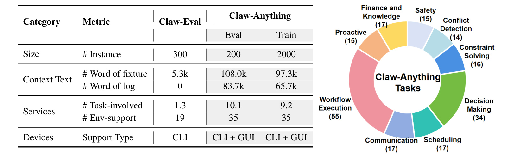
Figure 4 给出 Claw-Anything 的统计规模。左表比较 Claw-Eval 和 Claw-Anything：评测实例从 300 变为 200，但新增 2000 个训练环境；fixture words 从 5.3k 提升到 108.0k eval 和 97.3k train；log words 从 0 提升到 83.7k eval 和 65.7k train；task-involved services 从 1.3 提升到 10.1 eval 和 9.2 train；environment-supported services 从 19 提升到 35；设备支持从 CLI 变为 CLI+GUI。右侧饼图是评测类别分布，论文文字说明共有 9 个 major categories，其中 150 个 CLI-only 任务和 50 个 CLI+GUI 任务。
这张图说明 Claw-Anything 的难度来自多个维度的叠加。上下文长度大幅增加会考验模型长上下文筛选能力；服务数量增加会考验工具选择和状态整合；GUI 支持会引入操作执行和界面状态；训练环境则让 benchmark 兼具评测和后训练用途。注意，评测实例数反而少于 Claw-Eval，这意味着作者不是靠更多题目制造难度，而是靠每个任务的上下文复杂度和操作范围制造难度。
Figure 4 中 fixture words 和 log words 的分离也很重要。Eval 的 fixture text 是 108.0k words，log text 是 83.7k words；Train 的 fixture text 是 97.3k words，log text 是 65.7k words。这说明 benchmark 不只是把历史日志附在 prompt 后面，而是同时维护大量当前服务状态。对模型而言，fixture 和 log 的检索策略不同：fixture 更适合查询当前事实，log 更适合重建事件序列。一个 agent 若没有分层读取策略，就可能把 191.7k words 当成普通长文总结任务，导致 token 消耗高但有效证据少。
Trajectory Collection、评测改造和训练细节
为了收集训练轨迹，作者使用自动管线前三个阶段生成 2,000 个 task environments，并且训练 persona pool 与评测 persona pool 完全不重叠，以降低污染风险。之后他们从这些环境中收集 1,500 条 successful trajectories，用于 Qwen3.5-27B 的后训练。Appendix C 给出训练细节：learning rate 初始化为 $2\times10^{-5}$，使用 cosine decay；前 5% steps 做 linear warmup，从 $1\times10^{-6}$ 增至 $2\times10^{-5}$；训练 10 epochs，batch size 为 16，agent template 使用 qwen3-coder，maximum sequence length 为 100k tokens。
评测阶段也做了针对性改造。每个任务都有固定 internal current date，因此系统 prompt 会注入 task-specific date，避免 agent 自行读取真实日期导致结果漂移。工具接口支持 skill mode 和 tool mode：skill mode 只在 prompt 中列出工具短描述，agent 需要调用 meta-tool 获取完整规格；tool mode 直接把所有工具完整规格放进 prompt。App logs 作为文件注入 Docker 环境，通过文件系统读取工具访问。后端服务由模拟 service 处理 agent tool calls，返回数据或执行写入、删除等操作。这个设计让 agent 可以在评测时访问生成阶段填充的 app databases，同时也能测试“工具规格加载不足”会造成多大损失。
核心评测指标是 Pass@1、Pass@3 和 Pass^3。可以写成：
符号解释：$N$ 是任务数；$s_{i,k}$ 表示第 $i$ 个任务第 $k$ 次独立运行是否成功；Pass@1 看一次运行成功率；Pass^3 要求三次独立运行全部成功，因此更严格，能反映稳定性。论文还报告 continuous execution score 和 token consumption，分别补充衡量部分完成质量和成本。这个指标组合适合 Claw-Anything，因为广域数字世界任务不仅要成功，还要稳定成功，并且不能靠无限 token 探索。
Appendix B 的 simulated service backend 说明了另一个工程细节：agent 的 tool call 会被后端服务解析，然后返回请求数据或执行写入、删除等操作。这个后端是评测闭环的执行层，决定 agent 行动是否真的改变环境。没有这个层，benchmark 只能评价 agent 的计划或文本答案；有了这个层，评测可以检查实际 app database 是否被正确修改。对于 always-on assistant，执行层尤其关键，因为用户真正关心的是日历是否被更新、邮件是否被发送、提醒是否被设置，而不是 agent 是否写出一段合理解释。
训练设置也体现了长上下文任务的成本。最大序列长度是 100k tokens，这接近模型上下文能力边界，意味着训练和评测都需要处理大量无关信息。作者选择 10 epochs、batch size 16 和 warmup/cosine schedule，说明他们把 collected trajectories 当成 post-training 数据，而不是仅用于 few-shot 提示。这里潜在的研究问题是：模型提升来自学会了工具执行模板、学会了 Claw-Anything 环境格式，还是学会了更通用的长期上下文调查策略。论文通过 disjoint persona pool 缓解评测污染，但还不能完全回答跨环境泛化问题。
3. 实验结果
3.1 Main Results of Claw-Anything
论文在 OpenHarness 这个轻量 personal-agent scaffold 下评测开源和闭源模型。开源模型包括 Qwen 系列、MiniMax-M2.7、GLM-5.1、Kimi-K2.6，以及作者后训练得到的 Claw-Anything-Qwen3.5-27B；闭源模型包括 Claude Sonnet 4.5、Claude Opus 4.7 和 GPT-5.5。所有模型使用统一 harness，judge model 按 Claw-Eval 设定使用 Claude Sonnet 4.5。
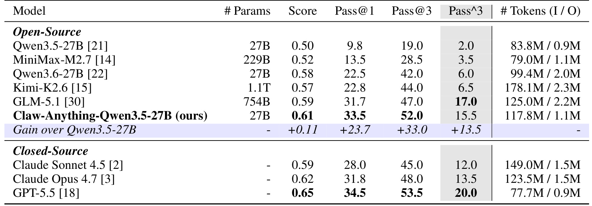
Table 2 是主结果表。基础 Qwen3.5-27B 只有 9.8 Pass@1、19.0 Pass@3、2.0 Pass^3；Qwen3.6-27B 提升到 22.5 Pass@1；Kimi-K2.6 为 22.8；GLM-5.1 达到 31.7。作者后训练的 Claw-Anything-Qwen3.5-27B 达到 33.5 Pass@1、52.0 Pass@3、15.5 Pass^3，相比基础 Qwen3.5-27B 增益是 +23.7 Pass@1、+33.0 Pass@3、+13.5 Pass^3。闭源模型中 GPT-5.5 最高，Pass@1 为 34.5，Pass@3 为 53.5，Pass^3 为 20.0。Claude Opus 4.7 是 31.8 Pass@1，Claude Sonnet 4.5 是 28.0。
这个结果有三个读法。第一，Claw-Anything 对前沿模型仍然很难。GPT-5.5 的 Pass@1 只有 34.5，Pass^3 更只有 20.0，说明三次稳定成功非常稀缺。第二，训练数据管线有用。Claw-Anything-Qwen3.5-27B 作为 27B 模型，在 Pass@1 上接近 GPT-5.5，并超过其他开源模型，说明从同类环境收集 successful trajectories 可以显著改变 agent 在该 benchmark 上的操作能力。第三，token 使用不能简单解释成功率。比如 Kimi-K2.6 输入 token 达到 178.1M，但 Pass@1 只有 22.8；GPT-5.5 输入 token 为 77.7M，却最高。这说明 Claw-Anything 的难点不是“读得更多”就能解决，而是证据选择、工具调用和执行闭环的质量。
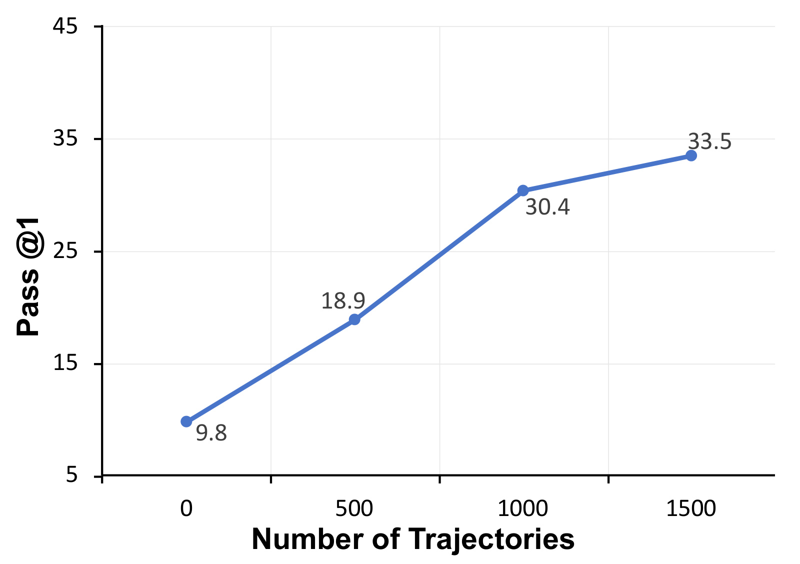
Figure 6 进一步说明训练轨迹数量的影响。Qwen3.5-27B 在 0 条轨迹时 Pass@1 为 9.8；500 条 successful trajectories 后升到 18.9；1000 条后升到 30.4；1500 条后升到 33.5。曲线不是完全线性，1000 到 1500 的边际增益变小，但总体方向很明确：自动管线产生的成功轨迹能为后训练提供有效监督。这张图支撑了论文第二层贡献，即 Claw-Anything 不只是 benchmark，也是一套可扩展训练数据基础设施。需要谨慎的是，这种收益首先证明在同类模拟环境内有效，并不自动证明迁移到真实用户数据后同样有效。
3.2 Scaling Context：事件流、跨服务和跨设备是否真的重要
Scaling context 消融回答一个关键问题：Claw-Anything 扩大的上下文维度是不是必要，还是只是让 prompt 变长。论文分别消融 event streams、cross-backend services 和 CLI-GUI collaboration，并观察性能变化。
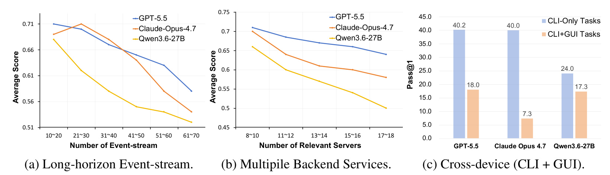
Figure 5 有三个子图。左图显示随着 event-stream 数量从 10-20 增加到 61-70，GPT-5.5、Claude Opus 4.7、Qwen3.6-27B 的 average score 都下降，Qwen3.6-27B 下降尤其明显。中图显示 relevant servers 从 8-10 增到 17-18 时，三个模型同样下降，说明服务数增加会加重跨服务协调负担。右图比较 CLI-only 和 CLI+GUI 任务：GPT-5.5 在 CLI-only 上是 40.2，但 CLI+GUI 只有 18.0；Claude Opus 4.7 是 40.0 对 7.3；Qwen3.6-27B 是 24.0 对 17.3。这个差距说明 GUI 接入不是简单加一个接口，而是显著改变任务难度。
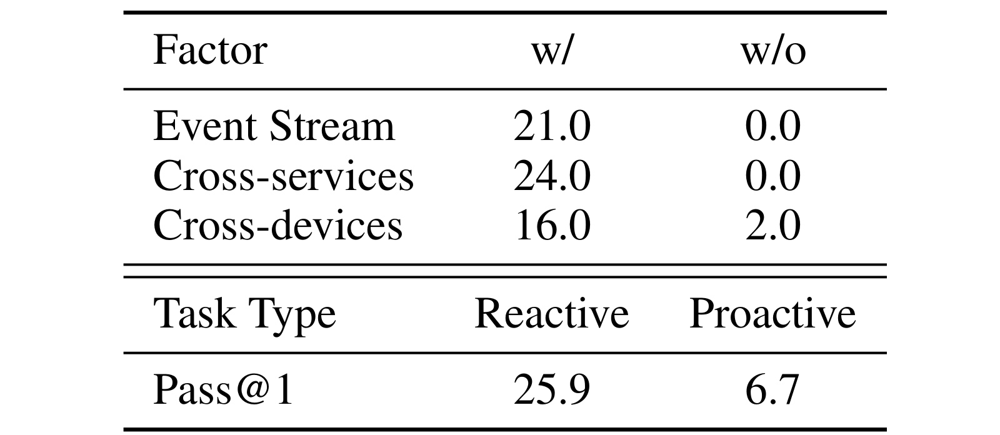
Table 3 给出更直接的 w/ 与 w/o 对比。Event Stream 有时 Pass@1 是 21.0，移除后是 0.0；Cross-services 有时是 24.0，移除后是 0.0；Cross-devices 有时是 16.0，移除后是 2.0。Reactive 任务 Pass@1 为 25.9，Proactive 只有 6.7。这个表很强地支持了论文的 central claim：扩展 operational scope 并不是装饰，而是很多任务可解的前提。没有事件流，agent 找不到历史证据；没有跨服务工具，agent 无法完成依赖多个后端的动作；没有 GUI，CLI+GUI 协作任务近乎不可解；主动任务则显著难于响应式任务，因为它多了时机和需求判断。
从实验解释上看，Table 3 比 Figure 5 更像“必要性”证据，Figure 5 更像“规模瓶颈”证据。前者告诉我们删除某个访问维度会导致任务失败，后者告诉我们即使访问维度存在，随着事件更多、服务更多、设备更杂，模型也会逐渐掉分。这两类证据合起来说明，Claw-Anything 的难度不是某个单一开关造成，而是“必须给访问权限”和“给了访问权限后仍要有效利用”两个问题同时存在。
3.3 Data pipeline：噪声、persona 丰富度和冲突如何塑造难度
数据生成管线的消融检验自动合成环境是否能控制任务难度。论文考察三类因素：noise injection ratio、simulation rounds 和 fixture-level conflicts。
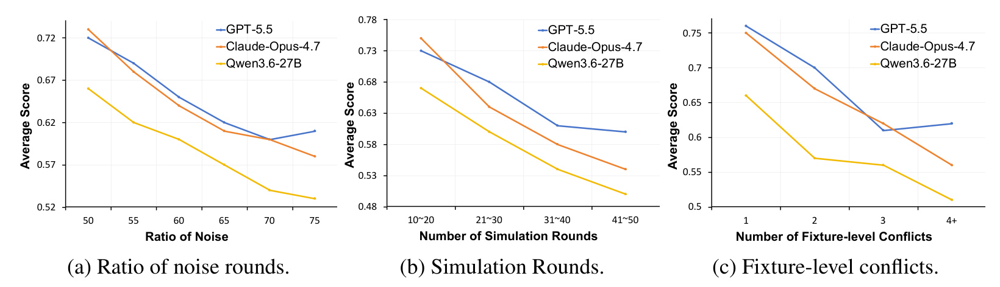
Figure 7 左图显示，noise ratio 从 50 增加到 75 时，模型 average score 整体下降。噪声比例越高，agent 越难从活动流中找出真正相关的线索。中图显示 simulation rounds 从 10-20 增加到 41-50 时，性能下降。轮次越多，persona 越丰富，历史状态越纠缠，任务越接近长期数字生活而不是一次性测试题。右图显示 fixture-level conflicts 从 1 增加到 4+ 时，性能也下降。冲突越多，agent 越需要判断哪个服务、哪条记录、哪个时间点更可信。
这张图说明 Claw-Anything 的生成管线不是只负责“批量造题”，还可以调节环境复杂度。对后续研究有用的地方在于，可以用 noise ratio、simulation rounds 和 conflicts 作为 curriculum 或难度控制变量。比如先让模型在低噪声、少冲突环境中学会跨服务执行，再逐步增加噪声和冲突，以观察能力边界如何变化。对 benchmark 设计来说，这也提供了可解释性：如果某个模型只在低噪声场景表现好，不能说它已经掌握常驻个人助理能力。
3.4 Evaluation Setting：技能加载方式会改变 agent 的可用工具上下文
论文还研究 skill-loading strategy。Full loading 把所有候选工具的完整规格放在 system prompt；lazy loading 只提供工具名称和短描述，agent 必须自己调用 skill-loading utility 获取完整规格。后者更贴近大规模工具生态，因为不可能把所有工具说明都提前塞进 prompt，但也更考验 agent 的工具发现和恢复能力。
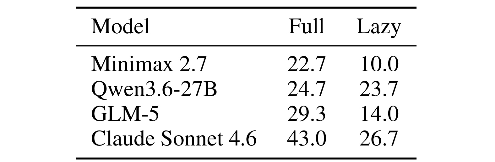
Table 4 显示，lazy loading 通常显著降低成功率。MiniMax 2.7 从 22.7 降到 10.0，GLM-5 从 29.3 降到 14.0，Claude Sonnet 4.6 从 43.0 降到 26.7。Qwen3.6-27B 比较特殊，从 24.7 只降到 23.7，论文推测它在不完整 skill context 下的恢复和工具选择更稳定。这个结果提醒我们，agent benchmark 里的工具说明暴露方式本身就是评测变量。如果 full loading 下成功、lazy loading 下失败，问题可能不在业务理解，而在工具发现、规格读取和调用参数恢复。
这对真实系统很重要。常驻个人助理连接的服务可能越来越多，完整工具规格会让 prompt 变长、成本上升、上下文污染加重；lazy loading 更可扩展，但需要模型知道什么时候加载哪个 skill。Claw-Anything 把这个维度单独消融，有助于区分“模型不会做任务”和“模型不知道该用哪个工具”两类失败。
3.5 Failure Mode Analysis：主要瓶颈在 investigation 到 execution 的断裂
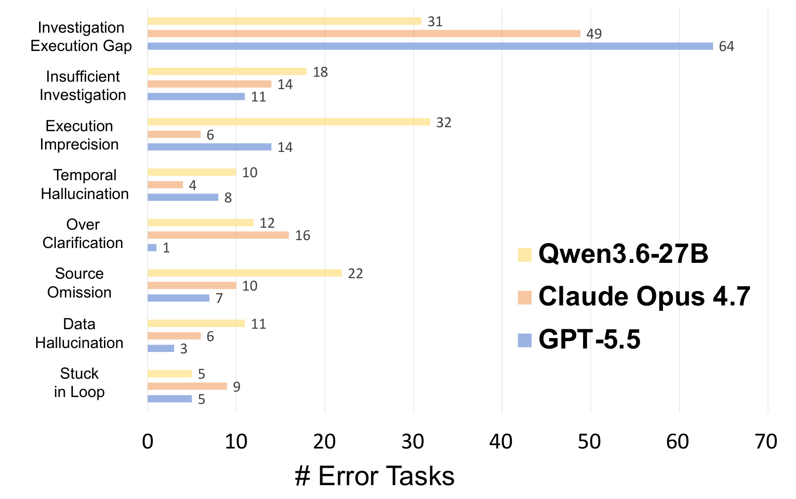
Figure 8 统计了 Qwen3.6-27B、Claude Opus 4.7 和 GPT-5.5 的失败类型。最突出的类别是 Investigation Execution Gap：Qwen3.6-27B 为 31，Claude Opus 4.7 为 49，GPT-5.5 为 64。这意味着很多失败并不是模型完全没找到相关上下文，而是在把调查结果转成正确动作时断掉。其他错误也有区分：Qwen3.6-27B 的 execution imprecision 和 source omission 更高，说明它可能找到方向但执行细节或证据引用不足；Claude Opus 4.7 的 over clarification 和 stuck in loop 更突出，说明它可能在不确定时反复澄清或循环；hallucination 类错误相对较少，说明 Claw-Anything 的主要挑战不是普通事实幻觉，而是复杂环境中的行动可靠性。
这个分析和前面的 task formulation 形成闭环。若任务成功需要 $\mathrm{SelectRelevant}$ 和 $\mathrm{Act}$ 两步都正确，那么 investigation-execution gap 就是“选对了证据但执行没落地”。对于实际个人助理，这是最危险的失败类型之一。模型可能看起来理解用户意图，也能说出正确计划，但最终没有在正确服务写入、没有处理移动端状态、没有执行 verifier 需要的动作。Claw-Anything 用 outcome-oriented evaluation 把这类失败暴露出来，避免只看推理文本而高估 agent 能力。
这个错误分布还说明，未来优化不应只围绕更长上下文或更强语言理解。若 investigation-execution gap 最大，系统可能需要更好的行动校验、工具调用前置检查、跨服务事务机制、执行后自检和可回滚操作。若 source omission 较高，则需要更强的证据引用和状态追踪；若 over clarification 或 loop 较高，则需要更好的不确定性管理和停止条件。Claw-Anything 的价值在于把这些工程问题转化成可统计的失败类别，使后续模型改进不只追求平均 pass@1，也能针对具体错误类型优化。
3.6 小结：实验支撑了 benchmark 难度，也暴露了模拟环境边界
整体实验链条是完整的。Table 2 证明 Claw-Anything 对前沿模型有难度，且后训练轨迹有效；Figure 5 和 Table 3 证明事件流、跨服务、跨设备与 proactive 任务确实贡献难度；Figure 7 证明数据生成管线中的噪声、轮次和冲突可控地增加难度；Table 4 证明工具规格加载方式影响结果；Figure 8 则解释主要失败模式。它们共同支撑论文主张：个人助理评测应从短程、局部、干净任务扩展到长期、多服务、多设备、有噪声的数字世界。
从结果外推角度看，我认为 Table 2 的“训练后 27B 模型接近 GPT-5.5”需要谨慎解读，但并不削弱论文价值。谨慎的原因是训练模型使用了同一类管线生成的成功轨迹，可能对环境格式和任务风格更适配；不削弱价值的原因是作者的目标之一就是证明自动环境能提供 scalable supervision。更有意义的后续实验会是：使用 Claw-Anything 轨迹训练后，模型是否能迁移到其他个人助理 benchmark、真实办公环境或不同服务集合；反过来，用其他 agent 训练数据训练的模型是否能在 Claw-Anything 上提升。这样的交叉验证能区分 benchmark-specific adaptation 和通用能力提升。
但实验也有边界。第一，所有结果仍在作者构造的模拟服务和任务生成协议内，不能直接等同于真实用户数据。第二，训练收益可能部分来自模型适配了同类生成环境，而不是获得通用个人助理能力。第三，闭源模型和未来模型版本的命名、能力、API 设定会变化，表中分数应当被理解为论文给定时间点和评测协议下的结果。第四，Claw-Anything 的评测集中在 pass rate 和执行结果，隐私授权、用户可控性、长期记忆删除、错误恢复和安全审计只是社会影响与限制部分讨论的方向，还没有成为主实验指标。
4. 总结
4.1 我的判断
我会把 Claw-Anything 视为一篇重要的 agent benchmark 论文，而不是模型论文。它的价值在于把 always-on personal assistant 的评测对象从“会不会调用工具完成单次请求”推进到“能否在用户数字世界的长期状态里调查、判断、执行和主动辅助”。最值得吸收的是它的状态建模方式：persona、devices、fixture bank、event log 缺一不可；而且这些状态要随事件注入共同演化，不能只靠 prompt 拼接。对推荐、搜索和个人助理系统来说，论文提醒我们，长期上下文系统的评估必须把噪声、冲突、跨服务依赖和执行结果放进同一协议。
4.2 工程启发与复现建议
如果要复现或借鉴这篇论文，我会先做一个小规模版本，而不是直接复制 40 多个服务。第一步选 3-5 个真实业务服务，定义 persona、fixture、log 和 device/interface 的最小闭环；第二步设计 seed tasks 和 noise events，确保每次事件会同时更新服务状态和日志；第三步建立 verifier，并用参考解执行检查任务是否可解；第四步区分 full loading 和 lazy loading，单独记录工具发现失败；第五步把失败样本按 investigation、execution、source omission、temporal hallucination 等类别归因。只有这些日志齐全，pass@1 才能解释系统到底弱在哪里。
4.3 局限与后续跟进
本文至少有四个局限。第一，很多后端服务仍是 controllable mock environments，不等同于真实复杂系统。第二，设备覆盖仍有限，论文承认现实中用户会在手机、电脑、平板、可穿戴和智能家居之间流动。第三，数据生成依赖 LLM simulator，任务风格和冲突分布可能带有生成器偏差。第四，广域数字访问天然涉及隐私、授权、审计和误操作风险，论文把这些作为社会影响讨论，但没有把它们系统纳入评分指标。第五，后训练收益主要在 Claw-Anything 协议内验证，跨平台、跨语言、跨真实用户数据的泛化仍需要后续工作。
后续我会重点跟进三件事。第一，作者仓库和数据集是否公开完整环境、verifier、训练轨迹和评测脚本，因为 benchmark 的价值取决于可复现性。第二，是否有后续模型在不使用同源训练轨迹的情况下显著提升 Claw-Anything，借此区分通用 agent 能力和数据适配收益。第三，是否有人把隐私授权、可撤销记忆、危险动作确认和用户控制纳入类似 benchmark，使 always-on assistant 的评测不只看“能不能做”，还看“能不能安全、可审计、按用户边界做”。整体看，Claw-Anything 的方向是正确的：个人助理的下一阶段竞争不会只发生在单轮推理，而会发生在长期状态管理、跨服务执行和可信失败恢复上。